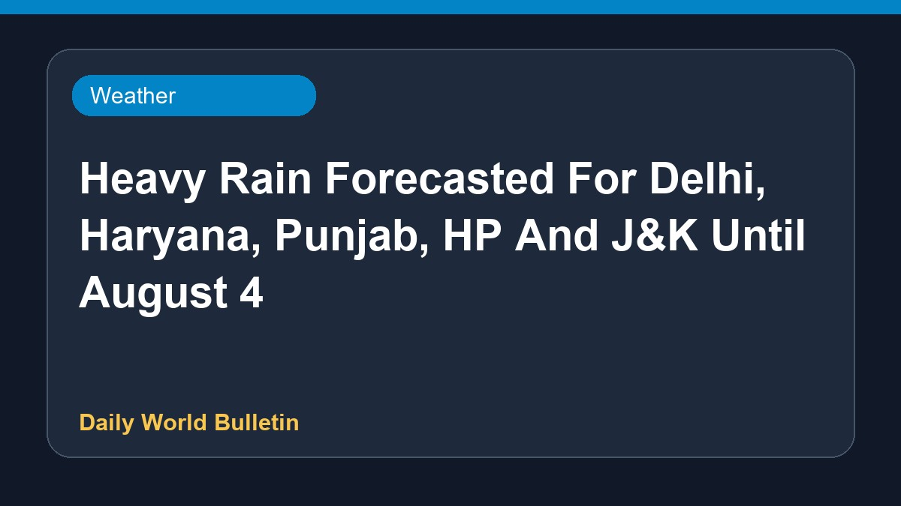

Heavy Rain Forecasted For Delhi, Haryana, Punjab, HP And J&K Until August 4

The India Meteorological Department has issued a thunderstorm warning alongside predictions of heavy rainfall across Delhi, Haryana, Punjab, Himachal Pradesh, and Jammu and Kashmir. These wet weather conditions are expected to persist until August 4. Residents and authorities in the affected regions have been advised to stay updated on the weather advisories and take necessary precautions against potential disruptions caused by the continuous downpours.
Original source: Weather News Sources
Heavy Rain Likely Across Delhi, Haryana, Punjab, HP And J&K Till August 4; IMD Issues Thunderstorm Warning - Daily Excelsior ↗
Heavy Rain Likely Across Delhi, Haryana, Punjab, HP And J&K Till August 4; IMD Issues Thunderstorm Warning - Daily Excelsior ↗